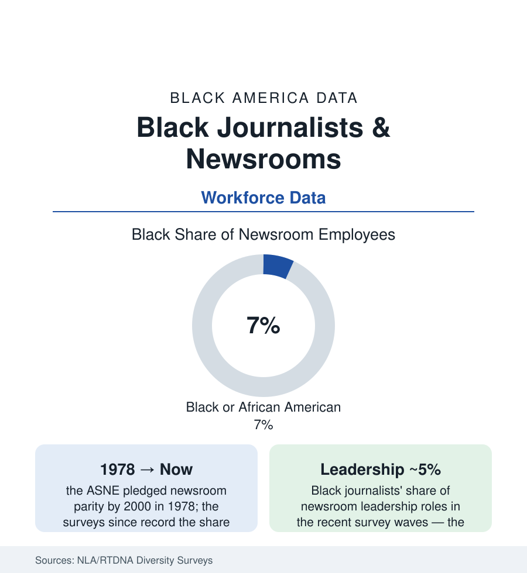

Black Employment
Black Journalists: Seven Percent of the Newsrooms That Cover 100 Percent of the News
Black journalists hold roughly 6–7% of U.S. newsroom jobs — half the population share — while the Black press that trained generations runs on a fraction of its historic scale. The workforce data.

The people who decide what counts as news in America are about seven percent Black. The newsroom diversity surveys — run by the industry itself for nearly half a century — record the share of Black journalists in U.S. newsrooms at roughly six to seven percent in the recent waves, about half the Black share of the population, with leadership roles (the editors who assign, frame, and kill stories) thinner still. The number has its own famous history: in 1978 the editors' association pledged parity by the year 2000; the surveys since are the record of that pledge's arithmetic. This article reads the journalism workforce file.
The Survey Record: Print, Broadcast, Digital
The data come in the industry's three dialects: the newspaper and digital newsroom surveys (Black journalists in the mid single digits of staff, higher at the large metros, thinnest at the community papers of the consolidating chains); the broadcast surveys (the RTDNA/Hofstra counts — television news staffs somewhat more diverse than print's, Black journalists around ten percent of the TV news workforce and a smaller share of news directors — roughly five to six percent — with radio thinner); and the digital-native tier (the newest surveys' most diverse readings, driven by the nonprofit and startup sector). The beats carry the internal map (Black reporters concentrated, in the assignment studies, in the metro, education, and 'urban affairs' portfolios, thinnest in the business, technology, and national-security desks — the coverage consequences legible in every other section of this atlas, whose data reach the public pre-framed by whoever was assigned). The on-air tier is its own visible ledger — the anchors of the network and major-market broadcasts a nameable cohort — while the producer and executive-producer ranks behind the camera (the actual assignment power in television) run thinner in the survey cross-tabs.
The Black Press: The Parallel Institution's Economics
Beside the mainstream count stands the institution that predates it: the Black press, from Freedom's Journal (1827) through the Chicago Defender's migration-moving power to the current census — the National Newspaper Publishers Association's roughly two hundred Black-owned papers, the Black magazines' digital successors, the Black radio and television owners of the media-business article, and the digital-native Black outlets of the social era. Its workforce data are the industry's hardest economics: the historic papers' staffs shrunken from newsroom dozens to handfuls in the advertising collapse (the classified and retail ads that funded them following the platforms), the surviving model's reinventions (the nonprofit conversions, the collaborative reporting networks, the foundation-funded beats), and its pipeline function intact regardless — the Black press as the training ground and the safety net of Black journalism for two centuries, the place where the mainstream's seven percent learned the trade and where its exiles landed. The journalism-school data complete the funnel (Black students at roughly eight to ten percent of journalism enrollments — the pipeline fuller than the hiring that awaits it, the familiar shape) and the National Association of Black Journalists (founded 1975, among the largest journalism organizations in the country) stands as the profession's Black institution — its convention the industry's largest single hiring hall.
Contraction: The Workforce Beneath the Workforce
The denominator is collapsing under every group's count: the BLS and Pew newsroom-employment series record newsroom jobs down by more than a quarter since 2008 (newspaper jobs halved), so the diversity share now divides a shrinking pie — with the layoff-era studies recording the 'last hired' pattern in several chains' cuts (diversity gains of the 2010s partially unwound in the 2020s' contractions, the surveys' most recent waves dipping). The business-model file is the journalism section of the business tab (the platform advertising duopoly, the hedge-fund ownership wave, the nonprofit and public-media counter-models), and its racial layer is structural: the outlets serving Black audiences monetize at the industry's documented discount (the advertising market's Black-audience undervaluation — audience for audience, CPM for CPM — measured in the media-economics studies), so the institutions closest to the community operate on the thinnest margins in a thin-margin industry.
Reading the Newsroom Data
Seven percent of the staffs, five percent of the leadership, one hundred percent of the coverage consequences: the journalism file is this atlas's meta-data — the record of who holds the pen that writes the first draft of every other file's public story. The 1978 pledge's deadline is twenty-six years past. The surveys continue annually, and so does the arithmetic they record: the share rising a fraction per decade, the denominator shrinking beneath it, and the Black press — two centuries in — still carrying the coverage the count says the mainstream cannot staff.
More in Black Employment
The Black Unemployment Rate: The Two-to-One Pattern
Black unemployment runs at roughly twice the White rate — 5.5 percent against 3.3 percent in annual averages — a ratio stable across five decades of federal data. How it is measured and why it persists.
Black Median Weekly Earnings: The 80-Cent Ratio
Black full-time workers earn a median of about $900 a week — roughly 80 cents for every dollar White workers earn. The BLS earnings data by group, gender, and occupation.
Black Labor Force Participation: Working at National Rates
Black labor force participation runs at roughly the national rate — and Black women participate at higher rates than White women. The BLS participation data.
Source: News Leaders Association and RTDNA newsroom diversity surveys; Bureau of Labor Statistics; National Association of Black Journalists; Pew Research Center journalism studies.